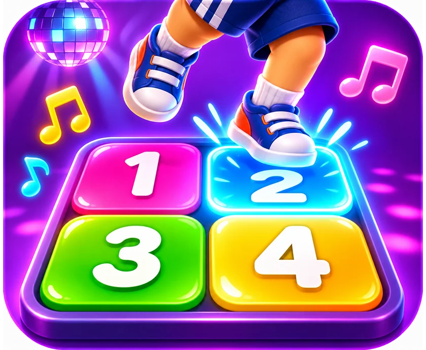

Dança dos Números
Tapete, reação e memória.
👶 4+ anos🏃 Movimento📷 Tapete + câmera👆 Toque🧠 Memória
Sobre o jogo
Um jogo de tapete de dança: a tela mostra um número, uma cor ou uma continha, e a criança pula no quadrado certo de um tapete com 4 quadrados (de EVA ou marcados no chão). A câmera percebe em qual quadrado ela está. No modo memória, a sequência cresce como no Genius.
Habilidades trabalhadas
AgilidadeTempo de reaçãoMemória sequencialReconhecimento de números e coresCálculo simples
Como jogar
- Monte um tapete 2x2 com os números 1 e 2 na frente e 3 e 4 atrás.
- Calibre: fique em cima de cada quadrado quando o jogo pedir.
- Escolha Reação rápida ou Memória e pule no quadrado certo.
Dica para professores e terapeutas
O relatório mostra o tempo médio de reação. Ligado na TV, a turma toda acompanha.
 Destrava!
Destrava!